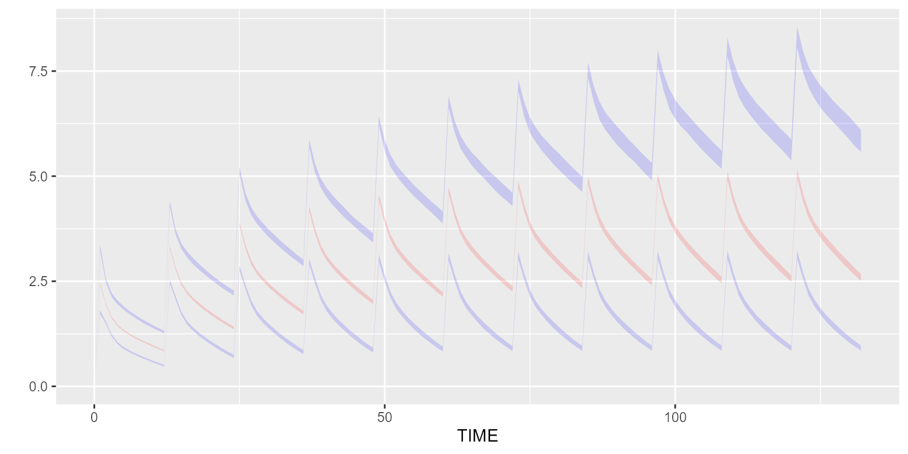
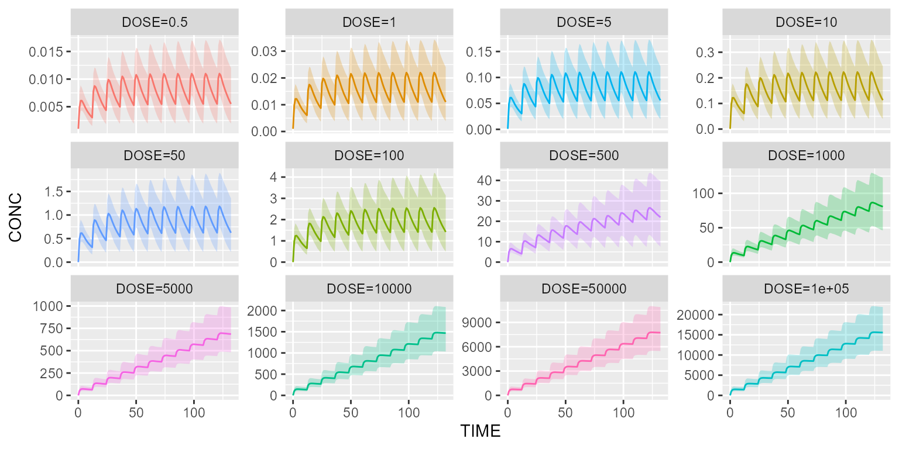

Run your simulation in parallel
Source:vignettes/v17_run_simulation_in_parallel.Rmd
v17_run_simulation_in_parallel.RmdThis vignette explains how Campsis can benefit from several CPU cores for running your simulation efficiently.
Run replicates in parallel
Sequential run:
tic()
results <- simulate(
model = model,
dataset = dataset,
dest = "mrgsolve",
seed = 1,
outfun = PIOutfun(variable = "CONC"),
replicates = 100
)
toc()## 146.73 sec elapsedUsing 6 cores:
tic()
results <- simulate(
model = model,
dataset = dataset,
dest = "mrgsolve",
seed = 1,
outfun = PIOutfun(variable = "CONC"),
replicates = 100,
settings = settings
)
toc()## 70.99 sec elapsed
vpc_plot(results)
Since there is no uncertainty on the parameters and since 1000 patients are simulated in each replicate, the confidence intervals on the percentiles are very low.
Run scenarios in parallel
Instead of giving a fixed dose, let’s make the dose dynamic using a
DOSE covariate:
Let’s create one scenario per dose to be tested:
scenarios <- Scenarios()
for (dose in c(0.5, 1, 5, 10, 50, 100, 500, 1000, 5000, 10000, 50000, 100000)) {
scenarios <- scenarios %>%
add(Scenario(
name = paste0("DOSE=", dose),
dataset = dataset_ %>% replace(Covariate("DOSE", dose))
))
}Sequential run:
tic()
results <- simulate(
model = model,
dataset = dataset_,
seed = 1,
scenarios = scenarios
)
toc()## 22.44 sec elapsedUsing 6 cores (auto-setup plan):
tic()
results <- simulate(
model = model,
dataset = dataset_,
seed = 1,
scenarios = scenarios,
settings = settings
)
toc()## 19.83 sec elapsedUsing 6 cores (plan already setup from last execution):
tic()
results <- simulate(
model = model,
dataset = dataset_,
seed = 1,
scenarios = scenarios,
settings = settings
)
toc()## 18.51 sec elapsedPlot results:
# Re-arrange scenarios by natural order
results <- results %>%
mutate(SCENARIO = factor(SCENARIO, levels = unique(SCENARIO)))
shaded_plot(results, "CONC") +
facet_wrap(~SCENARIO, ncol = 4, scales = "free_y") +
guides(colour = "none", fill = "none")
Run slices in parallel
It may be useful to simulate slices in parallel when the simulation time per individual is high (e.g. long simulation). To illustrate this topic, let’s dose and observe a drug over a 6-month period.
dataset_ <- Dataset(200) %>%
add(Bolus(time = 0, amount = 100, ii = 12, addl = 364)) %>%
add(Observations(times = 0:(365 * 12)))Sequential run:
tic()
results <- simulate(
model = model,
dataset = dataset_,
seed = 1
)
toc()## 8.9 sec elapsedUsing 6 cores (auto-setup plan):
tic()
results <- simulate(
model = model,
dataset = dataset_,
seed = 1,
settings = settings
)
toc()## 7.97 sec elapsedPlease note that the default slice size for mrgsolve is
500, which means that only 1 core was used in the previous example. For
rxode2, which works with a much smaller slice size of 6
subjects, paralleling slices may be interesting for long simulations, as
demonstrated here.
Setup plan with package future
As you may have seen in the examples above, the argument
auto_setup_plan is TRUE by default. This
means, that Campsis, will setup your hardware plan every time you call
the simulate method. This comes at a high cost since the
setup phase can take some time.
For repeated simulations, it may be useful to setup your plan
manually once for all. To do so, you can call
setup_plan_default on your settings or hardware object:
settings <- Settings(Hardware(
cpu = 2,
replicate_parallel = TRUE,
auto_setup_plan = FALSE
))
setup_plan_default(settings)If you do so, please don’t forget to set the argument
auto_setup_plan to FALSE, when you give these settings to
the simulate method, otherwise your plan is setup
again…
For going back to the sequential execution (1 CPU core), you can call:
Run Campsis in parallel within the pipeline tool targets
The targets package is a Make-like pipeline tool for Statistics and data science in R. With targets, you can maintain a reproducible workflow without repeating yourself. It is the ideal pipeline tool to use for medium to large simulation projects with Campsis.
This package supports parallelisation and therefore can complete your
simulation workflow faster. The following script
(_targets.R) gives you a brief overview of how you can run
several simulation targets in parallel.
library(targets)
source("R/my_script.R")
# Packages loaded by targets
packages <- c("campsis", "progressr", "future")
tar_option_set(packages = packages, storage = "worker", retrieval = "worker")
# Prepare 3 workers
future::plan(future::multisession, workers = 3)
list(
tar_target(
model,
model_suite$pk$`1cpt_zo_abs_lag`,
deployment = "main"
),
tar_target(
dataset,
make_dataset(subjects = 1000, dose = 1000),
deployment = "main"
),
tar_target(
results1,
run_simulation(model = model, dataset = dataset, replicates = 10, seed = 1),
deployment = "worker"
),
tar_target(
results2,
run_simulation(model = model, dataset = dataset, replicates = 10, seed = 2),
deployment = "worker"
),
tar_target(
results3,
run_simulation(model = model, dataset = dataset, replicates = 10, seed = 3),
deployment = "worker"
)
)This small project can be downloaded by clicking the link below.
Download targets squelettonTo run this project, nothing is easier. Open an R console within your targets folder and type: